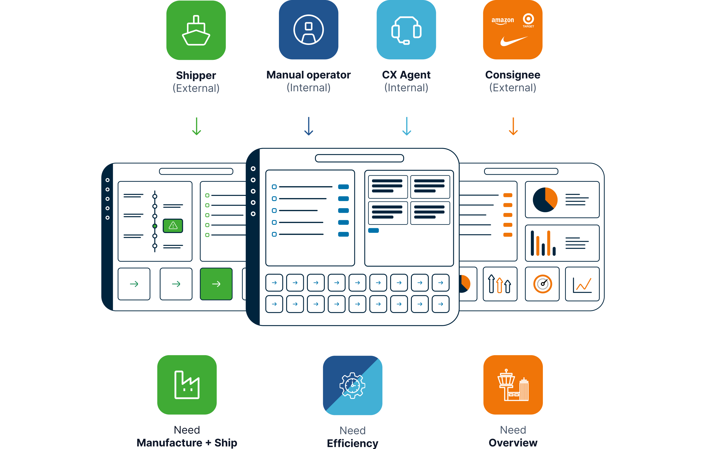

Case study · 2021–2023
Maersk
Taking design from an afterthought to a strategic function — across one of the world's largest and most complex logistics platforms.

Case study · 2021–2023
Taking design from an afterthought to a strategic function — across one of the world's largest and most complex logistics platforms.
The challenge
Maersk was undergoing one of the most ambitious strategic pivots in its 100-year history — shifting from a pure shipping company to a fully integrated, end-to-end supply chain operator. New products. New customers. New complexity.
The platform hadn't kept pace. Nine years of reactive feature additions, siloed product teams, and no shared design language had left operators navigating a system built around the company's internal logic — not their actual jobs.
Design was buried inside Technology. Designers were embedded in squads, reactive to engineering priorities, with no seat at the strategic table. The work was good. The positioning wasn't.
"Supply chain management is a complex relay race, marked by numerous baton handovers — and an opportunity for human error at every single one."
The brief, in one sentence
Diagnosis
Before any redesign work began, I ran a cross-platform audit with the team. We mapped every user journey across the platform and identified nine recurring systemic failure patterns — not isolated bugs, but structural UX debt baked into the product's foundations.
01
Inconsistent interface design
Each product team had built its own patterns. Operators switching between flows faced a new visual language with every context switch.
02
Unclear task flows
Users couldn't reliably navigate from task start to completion. Entry points were ambiguous and progress felt invisible.
03
Linear operations, non-linear UI
Supply chain work happens in sequence. The platform's information architecture reflected none of that — it followed the org structure, not the work.
04
Information overload
Operators were shown everything all at once. No prioritisation, no progressive disclosure — just dense tables of data with no clear hierarchy.
05
Reactive feature additions
Every new request got bolted on. There was no strategic framework for evaluating where new capability belonged or what it would displace.
06
Incomplete workflow integration
Operators regularly had to leave the platform to use email, spreadsheets, and phone calls to complete tasks the system should have handled.
07
One-size-fits-all approach
Shippers, operators, and agents all had different jobs — but saw the same interface. No persona-specific tailoring meant no one was well served.
08
No proactive user controls
The platform was reactive. Users found out about problems only when they became crises. No early-warning signals, no actionable alerts.
09
External channel dependency
Critical coordination happened outside the platform — in email threads and phone calls. The system had no shared communication layer.
The approach
Fixing the interface without fixing design's position in the organisation would have been wasted effort. The first work wasn't on a screen — it was on the org chart. We needed design in discovery before engineering, not after.
Before
Design buried 4 levels deep — reactive, tactical, late to every conversation.
After
Design elevated to Product — an equal peer, shaping decisions from day one.
Team restructuring
Reorganised into three focused functions: Product Design, Design System, and Research — each with a clear mandate and dedicated leadership.
Design standards
Established baseline experience principles across all 20+ product teams, giving engineers and PMs a shared quality bar to work to.
Discovery integration
Embedded research and design into the earliest stages of product work — shifting from deliverable-focused to insight-driven ways of working.
Visibility & advocacy
Brought design quality and team progress into leadership conversations — making design impact legible at the VP and C-suite level.
Maersk platform · Operator personas & flows
"Mikkel brings something rare — he's both a strong creative leader and a strategic partner who genuinely understands business context. He came in, took ownership of the full design function, and built something that punched well above its weight."
Tarun Sharma · Chief Product & Technology Officer, Foundit · formerly Head of Product Management, Maersk
Hero project
The platform's navigation had been built around the system's logic — product names, internal team boundaries, engineering modules. Grand Central Station was a complete rethink, built entirely around the operator's job. What do they need to do today? What's blocking them? What needs their attention first?

01
Dynamic entry point
A personalised task and to-do overview tailored per user role — operators, shippers, and agents each land in a context built for their job, not a generic dashboard.
02
Seamless journey
Linear flow across all applications — for the first time, operators could follow a shipment from booking to delivery without losing their place or switching context.
03
Guided experience
Clear workflow start and endpoints, with proactive alerts surfacing issues before they became crises — turning the platform from reactive to genuinely useful.
Foundation work
A design system isn't a component library — it's a shared language. Project Flea Market gave 260 engineers and 20+ product teams a common visual foundation, reducing duplicated decisions and giving designers more time to spend on hard problems.
Info Cards
Tables
Headers
Navigation
Panels
Filters
20+
Product teams sharing a single
component library
3
Dedicated functions: Product Design,
Design System, Research
1st
Design system ever built
for the Maersk platform
Team & culture
Scaling a design team in a large enterprise isn't just about headcount. It's about building trust, creating the conditions for great work, and developing people who grow beyond what the role requires. I hired deliberately, mentored closely, and stayed in the work.
6→14
Team growth in 12 months
Doubled the team through deliberate hiring — prioritising craft, curiosity, and communication in equal measure. Every hire was a bet on someone who could grow into more than the role asked for.
6 nat.
Across 4 time zones
Built a genuinely international team — designers from Denmark, India, the UK, Germany, Portugal, and the Netherlands — and created the rituals and trust that made the distance irrelevant.
4.25/5
UX team Gallup score
Annual engagement survey, 2022
3.90/5
Platform average
All teams across the platform
+0.35
Above platform benchmark
Highest-scoring function in the org
What changed
Design repositioned inside Product
For the first time in Maersk's platform history, design had a direct line to product strategy — influencing decisions at the inception of new initiatives, not the end.
First shared design language
Project Flea Market established baseline components and standards across all 20+ product teams — reducing inconsistency and giving engineers a reliable foundation to build on.
Grand Central Station shipped
The platform's core navigation, rebuilt around operator jobs rather than system architecture — the most significant UX change the platform had seen in years.
Highest engagement in the org
The UX team scored 4.25/5 on the Gallup engagement survey — above the platform average of 3.90, and the highest of any function in our division.
"The most important design decision I made at Maersk wasn't about a screen. It was about where design sat in the conversation — and making sure it got there before the decisions were already made."
— Mikkel Køster, Head of UX & Design